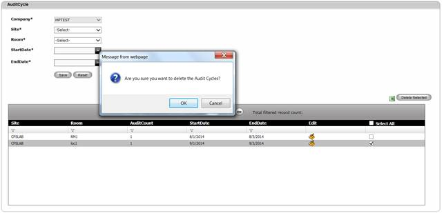
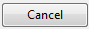
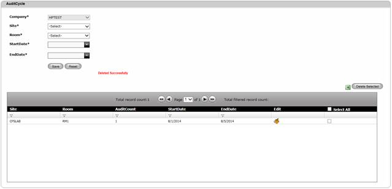

To delete an Audit Cycle,
1. Navigate Masters>>Audit Cycle on the DCTrackMobileWeb menu bar.
2. On the Audit Cycle screen, tick the checkbox corresponding to the Audit Cycle you want to remove. An audit cycle cannot be removed if the current date falls between the audit cycle’s start and end date.
3. Click Delete Selected button.
You will see the confirmation message window.

Figure 87: Audit Cycle Screen – Delete Confirmation Message
Can I select multiple Audit Cycles for deletion?
Yes. Simply tick on the check box corresponding to the Audit Cycle you would like to remove before clicking on the Delete Selected button. You can also click the Select All check box to select all items in the list for deletion.
4.
Click OK button to proceed or click Cancel

Upon deletion, you will see the successful deletion message and the deleted Audit Cycle is no longer on the list.

Figure 88: Audit Cycle Screen – Successful Deletion
|
Copyright © 2019 Hewlett
Packard Enterprise,v5.2.
|